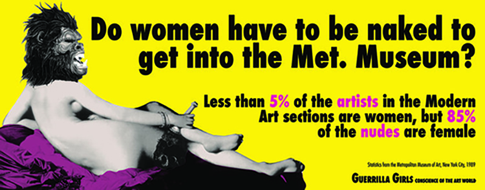

Biography
Two main events inspired the formation of the Guerrilla Girls:
One was the publication of the influential feminist essay "Why have there been no great women artists?" in 1971 by art historian Linda Nochlin. As the title suggests, Nochlin accepts that throughout history, women have failed to achieve greatness on a par with the Michelangelos and Picassos of the art world. Nochlin blames the art world, eschewing the oft-repeated explanation that women must be somehow biologically or intellectually inferior.
The second event occurred in 1984 when only 13 out of 169 contemporary artists invited to display work at the Museum of Modern Art's International Survey of Recent Painting and Sculpture were women.
The Group's Most Iconic Poster
The Guerrilla Girls' first color poster, which remained the group's most iconic image, is the 1989 Metropolitan Museum poster, which used data from the group's first "weenie count. "Next to the text is an imageof the Jean Auguste Dominique Ingrespiece La Grande Odalisque, one of the most famous female nudes in Western art history, with a gorilla head placed over the original face.
The Goal of the Guerrillas
The idea to adopt the gorilla as the group's symbol stemmed from a spelling error. One of the first Guerrilla Girls accidentally spelled the group's name at a meeting as "gorilla". Despite the fact that the idea of using a gorilla as a group symbol might have been accidental, the choice is nevertheless pertinent to the group's overall message in several key ways.
Though this goal has never been explicitly stated by the group, in the history of Western art, primates have often been associated with the visual arts, and with the figure of the artist. The idea of ars simia naturae ("art the ape of nature") maintains that the job of art is to "ape", or faithfully represent nature. . This was an idea first popularized by Renaissance thinker Giovanni Boccaccio who alleged that "the artist in imitating nature only follows Nature's own command.To begin with, the gorilla in popular culture and media is often associated with King Kong or other images of trapped and tamed apes. The gorilla is also typically associated with masculinity. The Met Museum poster is in part shocking because of its juxtaposition of the eroticized female odalisque body, and the large, snarling gorilla head.